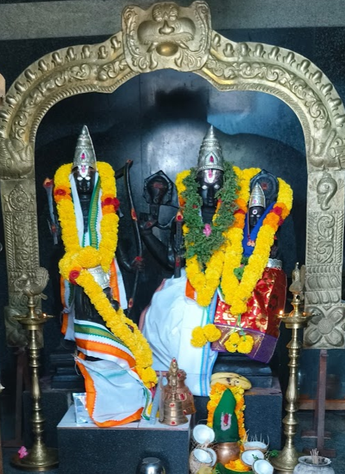
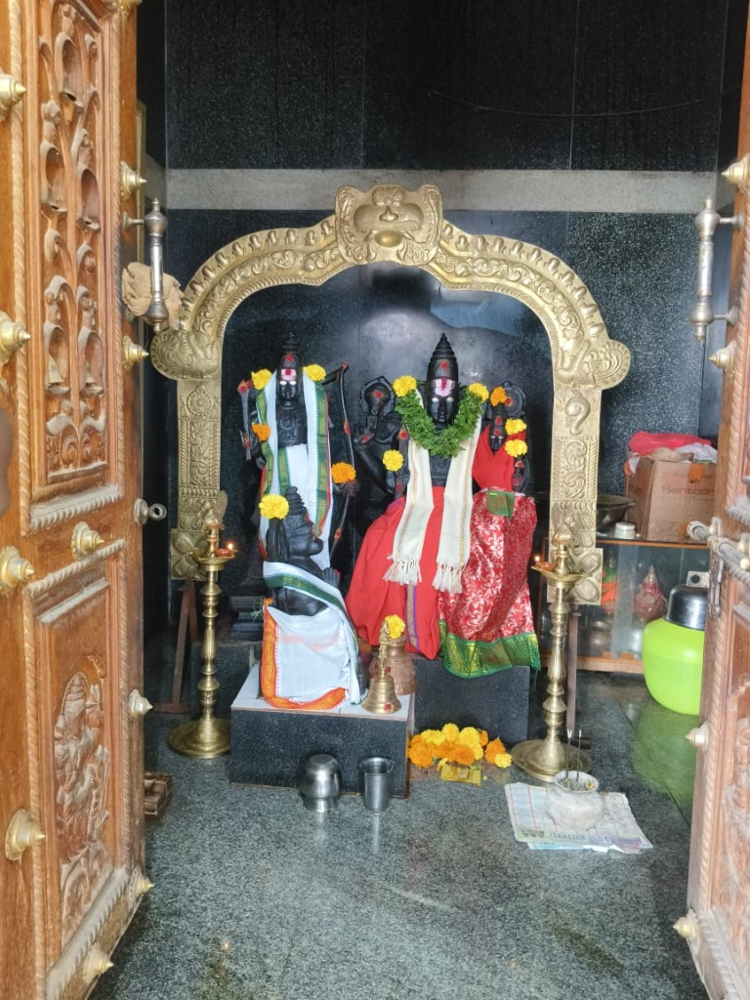

🪔
Deepa Seva
Offer oil lamps as a symbol of light, positivity, and spiritual devotion.
Traditional PoojaPolepalli (Basireddypalli), Pulivendula Mandal, YSR Kadapa Dist, Andhra Pradesh - 516390
✨ Annual Anniversary (వార్షికోత్సవం): Celebrated every year on 24th December with Abhishekam, Special Pujas & Annadanam.

OUR TEMPLE
Sri Rama Temple at Polepalli (Basireddypalli) is a sacred sanctuary where devotees gather to seek the blessings of Lord Sri Sita Rama, Lakshmana, and Anjaneya Swamy.
Upholding traditional values, the temple serves as the spiritual heart of the village and surrounding community in Pulivendula Mandal. All devotees can visit directly during temple opening hours.
DARSHAN & POOJA TIMINGS
Walk-in darshan is open to all devotees during the morning and evening schedules listed below.
సోమవారం - శుక్రవారం
శనివారం (విశేష దర్శనం)
ఆదివారం
PILGRIM INFORMATION & SERVICES
Key details for visiting devotees and community services at Sri Rama Temple, Polepalli.
సాధారణ భక్తుల దర్శనం
No token or advance booking required. All devotees can visit directly during temple opening hours.
సాంప్రదాయ పూజలు & సేవలు
Traditional Archana, Deepalankara Seva, and Kalyanotsavam performed by temple priests.
హుండీ కానుకలు & అన్నదానం
Devotees can offer voluntary hundi offerings and support Annadanam food distribution.
వసతి మరియు సౌకర్యాలు
Rest areas, clean drinking water, and community hall facilities for visiting families.
DAILY SEVA SCHEDULE
Traditional Vedic rituals performed daily at Sri Rama Temple from Suprabhatam to Ekanta Seva.
Awakening of Lord Sri Sita Rama with Vedic chants and Suprabhata Seva.
Morning ritual Abhishekam, Alankaram, and Ashtottara Shatanamarchana with fresh flowers.
Offering of sacred Naivedyam and distribution of Teertham & Prasadam to all visiting devotees.
Grand evening oil lamp lighting, Mangala Aarti, Bhajans, and Sahasra Deepa Seva.
Night Naivedyam, Neerajanam, and Ekanta Seva (Rest ritual) at closing time.

"శ్రీరామ రామ రామేతి రమే రామే మనోరమే | సహస్రనామ తత్తుల్యం రామనామ వరాననే ||"
శ్రీ రామ జయం • శ్రీ రామ జయం • శ్రీ రామ జయం
TEMPLE SEVAS
Devotees can participate in traditional temple sevas and community service programs.
Offer oil lamps as a symbol of light, positivity, and spiritual devotion.
Traditional PoojaSupport food service for devotees visiting the temple during festival programs.
Community ServiceParticipate in special Ashtottara Namarchana and devotional flower offerings.
Special RitualContribute toward temple infrastructure and mandapam maintenance.
Devasthanam SupportTEMPLE CALENDAR & FESTIVALS
Important festival dates and annual temple celebrations.
Grand annual anniversary with Mahanyasa Abhishekam, Laksharchana, Homam & Village Annadanam every year on December 24th.
9-day Sri Rama Navami Utsavams, Kalyanotsavam, Ratha Yatra, and grand Community Prasadam distribution.
DIVINE DARSHAN & MEMORIES
Click on any photo to view in high resolution fullscreen.
Sri Sita Rama Swamivari Divine Alankaram with floral garlands and brass prabhavali arch.

Garbhagriha sanctum entrance framed by ornate hand-carved wooden doors.
PILGRIM GUIDE & CONTACT
Srirama temple, Polepalli (Basireddypalli), Pulivendula Mandal, YSR Kadapa District, Andhra Pradesh 516390
C723+7R Polepalli, Andhra Pradesh
Mon – Fri & Sun: 6:00 AM – 9:00 AM & 6:00 PM – 8:00 PM
Saturday Special: 6:00 AM – 9:30 AM & 6:00 PM – 10:00 PM